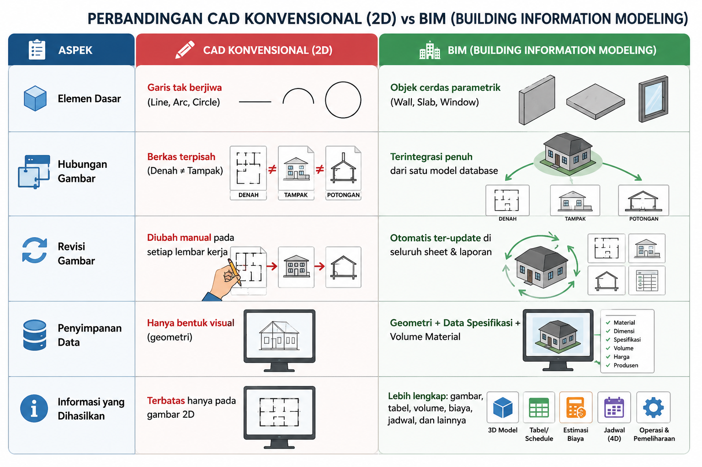

A. Definisi BIM (Building Information Modeling)
Secara harfiah, Building Information Modeling terdiri dari tiga kata kunci utama: Building (Fisik Bangunan), Information (Data Spesifikasi), dan Modeling (Representasi Digital 3D).

Menurut Standar Internasional (US NBIMS):
"BIM adalah representasi digital dari karakteristik fisik dan fungsional suatu fasilitas. BIM menjadi sumber berbagi pengetahuan bersama untuk informasi tentang suatu fasilitas, membentuk dasar yang dapat dipercaya untuk keputusan selama siklus hidupnya—sejak konsep paling awal hingga pembongkaran."
B. Filosofi Dasar BIM
Filosofi mendasar BIM terletak pada pergeseran mindset dari "Menggambar Garis" (CAD) menuju "Membangun Bangunan Digital" (Virtual Construction).
1 Perbandingan CAD Konvensional vs BIM
Di dalam BIM, seluruh proyek berada dalam satu basis data (central model) yang saling terintegrasi (Satu Sumber Kebenaran Data).

2 Object-Oriented & Parametric Modeling
Setiap objek yang ditarik dalam software BIM adalah elemen parameter berbasis objek nyata.
Bukan Sekadar Kotak
Saat Anda membuat "Dinding" dalam BIM, sistem mengenali objek tersebut memiliki panjang, tinggi, ketebalan, lapisan plesteran, acian, bata merah, massa jenis, nilai isolasi termal, hingga harga per meter persegi.
Parametrik
Jika Anda mengubah tinggi Level lantai dari 3.5 meter menjadi 4.0 meter, seluruh dinding dan kolom yang terikat pada Level tersebut akan menyesuaikan tingginya secara otomatis.
3 Front-Loading / MacLeamy Curve
Filosofi BIM menerapkan MacLeamy Curve: memindahkan beban pengambilan keputusan dan analisis desain ke tahap awal (perancangan), karena biaya merombak desain di komputer jauh lebih murah dibanding bongkar beton di lapangan.

C. Siklus Hidup Bangunan (Building Lifecycle)
Filosofi BIM mencakup seluruh perjalanan bangunan dari awal hingga akhir (Cradle to Grave).

D. Rangkuman untuk Siswa
-
1
BIM = Model + Data + Komunikasi.
-
2
Elemen BIM bersifat Parametrik: Perubahan pada satu bagian akan otomatis memperbarui bagian lain yang saling terikat.
-
3
Pencegahan (Front-Loading): BIM mengurangi rework (pekerjaan ulang) di lapangan karena kesalahan desain (Clash) sudah dideteksi sejak masa perancangan digital di komputer.